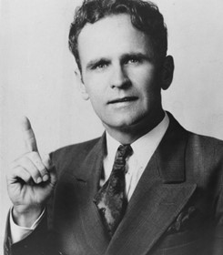

Pépites
01. Romains
Romains 8:19
Aussi la création attend-elle avec un ardent désir la révélation des fils de Dieu.
02. J'espère et j'ai confiance
63-0317M_Dieu se cache, puis se révèle dans la simplicité: 429
...J’espère et j'ai confiance que ce Message produira ce qu’Il était destiné à produire,...

03. La vision que nous avons aujourd'hui
65-0718M_Rendre un service à Dieu en dehors de sa volonté:150
Eh bien, regardons à la vision que nous avons aujourd'hui. Est-ce construire des églises? Est-ce de nouvelles choses? Est-ce que ce sont de grandes choses qui vont arriver, ou est-ce le jugement?...
04. Les saints jugeront la terre...prendre le contrôle
63-0318_Le Prémier Sceau: 115-116
Ne savez-vous pas que les saints jugeront la terre?» Voyez? Voilà. Les saints vont juger la terre et en prendre le contrôle. C’est vrai. Vous dites: «Comment donc un petit groupe comme celui-là...?» Je ne sais pas comment cela va se faire. Mais Il a dit que cela va se faire, alors, pour autant que je sache, ça règle la question.
05. Le combat s'annonce chaud et acharné
63-0321_Le Quatrième Sceau: 312
Maintenant, dans Apocalypse 19, il n’y a pas seulement lui qui se prépare, mais Christ aussi se prépare à l’affronter. Le combat s’annonce chaud et acharné.
Christ, dans Apocalypse 19... Christ rassemble les Siens; pas des quatre coins de la terre, parce qu’il n’y aura qu’un tout petit reste. Qu’est-ce qu’Il fait? Il les rassemble des quatre coins du Ciel. Demain soir, on va prendre «les âmes sous l’autel», et vous allez voir si c’est vrai ou pas. Des quatre coins du Ciel; sur un cheval blanc comme neige!
06. Pourchassé et persécuté
Exposé des Sept Âges de l'Église: page 352
Cet Âge de Laodicée se termine par une disparition complète de la Parole, ce qui oblige le Seigneur à se retirer. Il est à l'extérieur, d'où Il appelle les Siens, ceux qui Le suivent en obéissant à la Parole. Après une manifestation puissante de l'Esprit pendant un court moment, ce petit groupe pourchassé et persécuté ira rejoindre Jésus.
07. Ils vont à sa rencontre...leur choix à eux
63-0321_Le Quatrième Sceau :315
Ceux qui sont avec Lui montent des chevaux blancs aussi, et ils sont appelés «les élus avant la fondation du monde». Amen! Et ils sont fidèles à la Parole. Amen! Fiou! J’aime cette appellation: «Elus, avant la fondation du monde», et ensuite fidèles à la Parole, par leur propre choix, remplis de la stimulation du vin nouveau et de l’Huile, et ils continuent leur chevauchée, ils vont à Sa rencontre. Evidemment, ils savent que les Tonnerres ne vont pas tarder à dévoiler la chose. Voyez?
08. Reprendre le pouvoir
60-0522E_L'Adoption: 76
Et il a perdu sa position de dieu, il a perdu sa position de fils, il a perdu son empire, et Satan a pris le pouvoir. Mais, frère, nous attendons les manifestations des fils de Dieu, qui vont revenir, reprendre le pouvoir. Nous attendons la plénitude du temps, quand la pyramide arrivera à son sommet, quand les fils de Dieu seront pleinement manifestés, quand la puissance de Dieu ira de l’avant (alléluia) et retirera à Satan tous les pouvoirs qu’il a. Oui monsieur, c’est à lui.
09. Attendez que les sept Tonnerres fassent entendre
Quatrième Sceau: 180
Attendez que ces Sept Tonnerres fassent entendre leurs voix à ce groupe qui est vraiment capable de prendre la Parole de Dieu et La manier, là. Elle va trancher et couper. Et ils peuvent fermer les cieux. Ils peuvent fermer ceci, ou faire cela, tout ce qu’ils veulent. Gloire! Il sera tué par la Parole qui sort de la bouche de Dieu, qui est plus tranchante qu’une épée à deux tranchants. Ils pourraient faire apparaître cent milliards de tonnes de mouches s’ils le voulaient. Amen. Tout ce qu’ils vont dire va arriver, parce que c’est la Parole de Dieu, qui sort de la bouche de Dieu. Amen. Toujours, Dieu... C’est Sa Parole, mais Il utilise toujours l’homme pour La faire agir.
10. Réveil de l'Épouse
Troisième Sceau: 183
La–l’Epouse n’a pas encore eu de réveil. Voyez? Il n’y a encore eu aucun réveil là, aucune manifestation de Dieu pour éveiller l’Epouse. Voyez? C’est ce que nous attendons. Il faudra ces Sept Tonnerres inconnus là-bas pour La réveiller de nouveau. Il les enverra. Il l’a promis.
11. Besoin de savoir ce qu'on dit les Sept Tonnerres
Exposé des Sept Âges de l'Église: page 316
Et quand les sept tonnerres eurent fait entendre leurs voix, j’allais écrire; et j’entendis du ciel une voix qui disait : Scelle ce qu’ont dit les sept tonnerres, et ne l'écris pas.” Personne ne sait ce qu’il y avait dans ces tonnerres.
Pourtant, nous avons besoin de le savoir. Et il faudra que ce soit un prophéte qui en recoive la révélation, parce que Dieu n’a aucun autre moyen d’apporter Ses révélations de l’Écriture que par un prophéte.
12. Quand et comment exécuter
La brèche entre les sept âges de l'église et les sept Sceaux: 141
Ça, c’est décrit dans ce Livre scellé de Sept Sceaux dont nous sommes en train de parler maintenant. Très bien. Le Livre de la Rédemption, tout ça, c’est décrit ici. Tout ce que Christ fera à la fin nous sera révélé cette semaine, dans les Sept Sceaux, si Dieu nous le permet. Voyez? Très bien. Ce sera révélé. Et révélé, à mesure que les Sceaux seront brisés et nous serons appelés, alors nous pourrons voir ce qu’est ce grand plan de la rédemption, quand et comment il sera exécuté.
Tout cela est caché dans ce Livre de mystère, ici. C’est scellé, fermé par Sept Sceaux... Et l’Agneau est donc le Seul qui puisse les briser.
13. J'ai attendu avec impatience
Livre Adoption #5: page 170
Comment allez-vous faire pour y arriver? Tenez-vous tranquilles! Dieu veut placer Son Eglise, les fils et les filles de Dieu. O Dieu, donne-moi de vivre assez longtemps pour le voir, c’est ma prière. C’est tellement proche, que je pourrais presque le toucher de mes mains, on dirait. C’est tout près. C’est ce que j’ai attendu avec impatience, j’attends de voir le moment où on marchera dans la rue, et voyant un homme étendu là, infirme de naissance: “Je n’ai ni argent, ni or.” Oh, attendant les manifestations des fils de Dieu, alléluia, quand Dieu Se fera connaître, quand ils vont enrayer la maladie, qu’ils vont enrayer le cancer, qu’ils vont enrayer les maux.
14. Ne crains point petit troupeau
Exposé des Sept Âges de l'Église: page 61
“Ne crains point, Jean. Ne crains point, petit troupeau. Tout ce que Je suis, vous en êtes héritiers. Tout Mon pouvoir vous appartient. Ma toute-puissance est à vous, alors que Je suis au milieu de vous. Je ne suis pas venu apporter la crainte et l’échec, mais l’amour, le courage et la capacité. Tout pouvoir M’a été donné, et c’est à vous qu’il appartient de l’utiliser. Prononcez la Parole, et Je l’accomplirai. C’est Mon alliance, et elle est infaillible.”
15. La Parole, seul but: la Rédemption
63-0320_Le Troisième Sceau: 107
Nous voyons donc que Dieu a dit à Ève que bien longtemps après «la Parole reviendra à toi». Or, comment est-elle tombée? Je veux que ma classe le dise. D’où est-elle tombée? D’où Ève est-elle tombée? De la Parole. Est-ce juste? [L’assemblée dit: «De la Parole».–N.D.E.] La Parole. Et Dieu a dit qu’Il pourvoirait à un moyen pour la racheter et la ramener de nouveau à la Parole. Très bien. Bien longtemps après, la Parole se ferait connaître à elle. Très bien. La Parole allait donc venir dans un seul but. Maintenant, retenez bien ce que je suis en train de dire. La Parole allait venir à elle dans un seul but, celui de la rédemption.
16. Ce monde réclame sa rédemption
63-0324E_Le Septième Sceau: 43
Notre Père céleste, nous voilà arrivé à ce soir glorieux, cette heure glorieuse où quelque chose de glorieux est arrivé. Cela a environné les gens. Et, Père, je prie que, ce soir, ce soit divulgué, sans l’ombre d’un doute, dans le coeur et la pensée des gens, qu’ils sachent que Dieu est toujours sur le Trône, et qu’Il aime toujours Son peuple, et que c’est l’heure–l’heure que le monde a ardemment désiré voir; maintenant elle est proche, car ce monde réclame sa rédemption.
17. Jamais eu un temps...fils de Dieu manifestés
60-0522E_L'Adoption: 19
Dites-moi, mon frère, dites-moi, ma soeur, quand y a-t-il déjà eu un temps où les fils de Dieu devaient être manifestés, en dehors de maintenant, de ce temps-ci? Quand y a-t-il déjà eu un temps de l'histoire où ils devaient se manifester, au temps de la délivrance de la nature tout entière? La nature, la nature elle-même soupire, elle attend le temps de la manifestation. Eh bien, avant que l'expiation ait été faite, avant que le Saint-Esprit ait été déversé pour la première fois, avant tout le - tout l'Ancien Testament, tout au long des âges, il ne pouvait pas y avoir de manifestations. Il a fallu attendre ce temps-ci. Maintenant, toutes choses ont été amenées, elles arrivent, elles prennent forme vers une pierre principale, vers la manifestation des fils de Dieu, alors qu'ils reviendront, que l'Esprit de Dieu entrera dans ces hommes-là d'une façon si parfaite, que leur ministère sera tellement semblable à celui de Christ, au point de L'unir avec Son Eglise.
18. De tous cotés ils attendent...où sont ces gens?
Livre Adoption #III: page 66
Avec un ardent désir, la création entière attend la manifestation. Vous voyez, la manifestation! La manifestation, qu’est-ce que c’est? C’est de faire connaître! Le monde entier. Les musulmans, là-bas, ils attendent cela. De tous côtés, partout, ils attendent cela. “Où sont ces gens?”
19. Dispensation de l'adoption
Livre Adoption #IV: page 138-139
Croyez-vous aux dispensations? La Bible le dit: “Dans la dispensation [version anglaise du roi Jacques_N.D.T.] de la plénitude du temps.” La plénitude du temps, qu’est-ce que c’est? Il y a eu la dispensation de, eh bien, il y a eu la dispensation de la loi mosaïque. Il y a eu la dispensation de_de_de Jean-Baptiste. Il y a eu la dispensation de Christ. Il y a eu la dispensation de l’organisation des églises. Il y a eu la dispensation de l’effusion du Saint-Esprit. Maintenant il y a la dispensation de l’adoption, ce que le monde attend, ce après quoi il soupire. “Et lorsque les temps seront accomplis, dans la dispensation de la plénitude du temps.” Cette plénitude du temps, qu’est-ce que c’est? C’est quand les morts ressuscitent, quand la maladie cesse, quand la quand toute la terre cesse de soupirer. “La plénitude de la dispensation du temps.”
20. Accomplir à travers l'Épouse
Exposé des Sept Âges de l'Église: page 164-165
Comme Il n’a pas terminé Son oeuvre entière lors de Son ministère terrestre, Il agit maintenant dans l’épouse et à travers elle. Elle le sait, car à l’époque, il n’était pas encore temps pour Lui de faire certaines choses qu’Il doit faire maintenant. Mais maintenant, Il va accomplir à travers l’épouse l’oeuvre qu’Il avait réservée pour ce moment précis.
21. La Parole est dans l'Épouse
Exposé des Sept Âges de l'Église: page 164
En effet, si la semence est mise en terre, l’eau la ramènera à la vie. En voici le secret. La Parole est dans l’épouse (comme elle était en Marie). L’épouse a la pensée de Christ, car elle sait ce qu’Il veut qu’on fasse de Sa Parole. Elle exécute en Son nom ce que la Parole ordonne, car elle a l’“ainsi dit le Seigneur”.
22. Adam a perdu les droits
La brèche entre les sept âges de l'église et les Sept Sceaux : 124-125
Et qui était innocent? Tout homme était né par un acte sexuel, par le sexe, tous. Et le seul qui ne l’était pas avait perdu les droits à la Vie Eternelle et le droit d’être roi sur la terre.
Oh! quand je pense à ce passage de l’Ecriture: «Car Tu nous as rachetés pour Dieu, et ainsi nous régnerons et serons rois et sacrificateurs sur la terre»! Oh! la la! Que... Le Parent Rédempteur... Oh! quelle belle histoire on pourrait raconter ici!
23. Ses sujets rachetés
Prémier Sceau: 159-160
Mais Il a dit: «Si Mon Royaume était de ce monde, Mes sujets auraient combattu pour Moi. Mon Royaume est en Haut.» Mais Il a dit: «Quand vous priez, priez comme ceci: ‘Que Ton Royaume vienne. Que Ta volonté soit faite sur la terre comme au Ciel.’» Amen. Oui. Combien ceci est glorieux!
Il a quitté le Trône du Père pour prendre Son propre Trône... Maintenant Il a cessé Son oeuvre d’intercession, Il s’est avancé pour réclamer Son propre Trône, Ses sujets rachetés. C’est pour faire cela qu’Il s’est avancé du Trône.
24. Avoir l'oeil perçant de l'aigle
Quatrième Sceau: 151
Lorsque vous montez là-haut, il vous faut avoir l’oeil perçant de l’aigle, pour voir ce qui vient et pour savoir ce qu’il faut faire. Or, c’est l’âge de l’aigle qui a révélé Cela. Maintenant, nous voyons que cet âge de l’aigle a été promis dans Apocalypse 10.7 et dans–et dans Malachie 1.4, que c’est dans les derniers jours, (Voyez-vous? c’est exact), qu’il serait là.
25. Donnez à Dieu des hommes vaillants
63-0318_Le Prémier Sceau: 383
Laissez-moi vous dire quelque chose, mon pauvre ami aveugle. Ce n’est pas par l’argent que le monde est gagné, mais par le Sang de Jésus-Christ. Donnez à Dieu des hommes, des hommes vaillants qui vont s’en tenir à cette Parole, qu’ils vivent ou qu’ils meurent; c’est ça qui va vaincre. Les seuls qui pourront vaincre, ce sont ceux dont les noms ont été écrits dans le Livre de Vie de l’Agneau dès la fondation du monde. Ce sont les seuls qui L’écouteront. L’argent n’aura rien à faire avec cela; il les enfoncera encore plus dans les traditions de leurs dénominations.
26. La force terrestre
62-0318E_La Parole parlée est la semence originelle #2: 375
Où se trouvera le gouvernement, sur quoi ? Sur les épaules, sur Son Corps. « Le gouvernement sur Ses épaules », c’est une partie du Corps. Qu’est-ce ? Sa force terrestre. La force terrestre de Dieu, c’est Sa Parole faite chair dans Son Corps ici sur terre, par lequel Elle s’accomplit.
27. Quelque part dans ce monde
58-1228_Pourquoi La Petite Bethléhem: 135
Seigneur Dieu, d’un petit groupe des gens qui sont lavés par le cordon de fil cramoisi du Sang du Seigneur Jésus, Tu feras sortir de nouveau Christ à travers ce groupe, Seigneur, quelque part dans ce monde, et Il paîtra toutes les nations avec une verge de fer.
28. Dieu et la création attendent
60-0522E_L'adoption: 36
Regardez ce qu’il y a eu entre les deux, l’âge de Wesley. Et ce qu’il y a eu après, c’est l’âge pentecôtiste. L’âge pentecôtiste, avec la restitution des dons, des dons spirituels. Maintenant, regardez cet âge qui arrive maintenant, tout en haut, à la Pierre principale. Vous voyez ce que je veux dire? La Venue du Seigneur, où c’est manifesté. Dieu et toute la création attendent que l’église trouve sa position, sa place.
29. C'est la conduite qui met en position
60-0522M_La position en Christ: 72
Maintenant, donner la place d’un fils. D’abord, après que le fils était arrivé, alors il était un fils, mais ensuite, nous avons vu que c’est sa conduite qui le mettait en position d’être adopté, c’est-à-dire s’il se conduisait comme il faut ou pas.
30. Réunir toutes choses: attendre la manifestation des fils
60-0522M_La position en Christ: 169
Mais pour ce qui est de réunir toutes choses, à la fin de la dispensation, pour ça, il faudra attendre la manifestation des fils de Dieu, dans cette dispensa-alors qu’Il réunira tout,tous ceux qui auront été amenés en Christ.
31. Le mystère de sa volonté
60-0522E_L'adoption: 18
Je me suis mis à passer d’une référence Biblique à l’autre, et je songeais: “Le mystère, comme c’est mystérieux! Et les Ecritures m’ont amené dans l’Ancien Testament, ensuite elles m’ont ramené dans le Nouveau Testament; l’enchaînement se faisait, pour voir le mystère de Sa Venue, le mystère de Sa volonté, le mystère d’être assis ensemble. Souvenez-vous, on ne peut pas l’enseigner dans aucun séminaire. C’est un mystère. Vous ne pouvez pas le connaître par des études, par la théologie. C’est un mystère qui a été caché depuis la fondation du monde, en attendant la manifestation des fils de Dieu.
32. Nous sommes au seuil/parole endossée
60-0522E_L'adoption: 80
Retournez à la Genèse, à l’original, qu’en est-il? Maintenant le monde et la nature soupirent, gémissent, tout est en état d’agitation. Comment ça? Pour que les fils de Dieu soient manifestés, quand les véritables fils, les fils nés, les fils remplis, parlent et que leur parole est endossée. Je crois que nous sommes au seuil de cela en ce moment. Oui monsieur. Dire à cette montagne, et qu’il en soit ainsi.
33. Rien n'est caché à l'Église qui hérite de la terre
59-0301M_Étroite est la porte: 70
Oh! ce matin nous avons le droit, Église, de connaître les secrets de la Venue du Seigneur, car le... Heureux ceux qui procurent la paix, ils seront appelés fils de Dieu! Heureux ceux qui ont faim et soif, ils seront rassasiés. Heureux ceux qui ont le coeur pur, car ils verront Dieu. Heureux les débonnaires, car ils hériteront la terre.» Si donc l’Eglise du Dieu vivant doit hériter la terre, aucun secret ne lui est caché.
34. Cacherai-je à Abraham-héritier du monde
58-0618_Écriture sur la muraille: 30
Et Abraham avait cent ans, et Sara, quatre-vingt-dix à ce moment-là. Et Sara était derrière l’Ange, c’est ce que déclare la Bible. Elle était dans la tente, et la tente était derrière l’Ange, et l’Ange a dit: «Cacherai-Je à Abraham ce qui va arriver, étant donné qu’il est l’héritier du monde ?» Et Il a dit: «Je te visiterai, à cette même époque (les vingt-huit jours de Sara), et vous allez avoir cet enfant que vous avez attendu.»
35. Homme agent de Dieu
Quatrième Sceau: 180-181
Toujours, Dieu... C’est Sa Parole, mais Il utilise toujours l’homme pour La faire agir.
Dieu aurait pu ordonner que les mouches apparaissent en Egypte, mais Il a dit: «Moïse, c’est ton travail. Je vais juste te dire quoi faire, et va le faire.» Il l’a pleinement accompli. Voyez? Il–Il aurait pu choisir de les faire apparaître par le soleil, Il aurait pu faire que ce soit la lune qui les fasse apparaître, ou que le vent le fasse, mais Il–Il a dit: «Moïse...» Cela–cela... Il choisit les hommes. Très bien.
-
50-0227_Dieu dans son peuple: 23
Dieu ne descend pas sur les dénominations. Dieu ne descend pas sur les appareils mécaniques. Dieu, le Saint-Esprit, descend sur les hommes. L'homme est l'agent de Dieu, et la chose la plus difficile que Dieu ait jamais eu à faire, c'était d'amener un mortel à croire un autre. Croyez-vous cela?
36. Se fera en dehors des mouvements organisés
Exposé des Sept Âges de l'Église: page 225
Dieu a agi en dehors des groupes pentecôtistes, en dehors des mouvements organisés, et ce qu’Il fera à l’avenir se fera également en dehors des mouvements organisés. Dieu ne peut pas se servir des morts pour agir. Il ne peut agir que par les membres VIVANTS. Ces membres vivants sont hors de Babylone.
37. Ce que ce dernier Message serait
Troisième Sceau: 197
...Dieu lui a promis par Jean le révélateur, par tous ces prophètes, exactement ce que ce dernier Message serait.
...Vous voyez, exactement ce qui arriverait maintenant! Et, pour l’église, qu’est-ce que C’est? La Parole incarnée faite de nouveau chair au milieu de Son peuple, vous voyez, et ils ne Le croient tout simplement pas.
38. Un homme qui se respecte
La brèche entre les sept âges de l'église et les sept Sceaux: 109
Tout homme qui se respecte se battrait pour défendre les droits qu’il a reçus de Dieu.
39. C'est comme la démocratie
Cinquième Sceau: 171
C’est exactement comme la démocratie, on trouve qu’elle est bonne. Je le crois aussi, mais ça ne marchera jamais comme il faut. Ça ne peut pas. Avec cette bande de Ricky qui en assume la direction. Comment donc parviendrez-vous à faire marcher ça parfaitement? Impossible. Remarquez, la seule chose convenable, c’était d’avoir un roi ayant la crainte de Dieu.
40. Ce qu'il nous faut au capitole
Livre Adoption #I: page 12
Ce qu’il nous faut, ici, au Capitole des États-Unis, comme Président, ce qu’il nous faut au Congrès, ce qu’il nous faut dans nos tribunaux, ce sont des hommes qui ont consacré leur vie à Dieu, qui sont remplis du Saint-Esprit et qui sont conduits par Sa direction Divine.
41. Le caractère est une victoire
Exposé des Sept Âges de l'Église: page 112
Il faut souffrir pour pouvoir régner. La raison en est qu’on ne peut tout simplement pas former un caractère sans souffrance. Le caractère est une VICTOIRE, pas un don. Un homme qui n’a pas le caractère ne peut pas régner, car la puissance sans le caractère, c’est satanique. Mais la puissance avec le caractère est apte à régner. Et, puisqu’Il veut que nous partagions même Son trône, tout comme Lui a vaincu et s’est assis sur le trône de Son Père, alors, nous aussi, nous devons vaincre pour nous asseoir avec Lui.
42. Catégories spéciale de gens
Exposé des Sept Âges de l'Église: page 16
Vous vous en souvenez, j'ai dit au début de ce message que ce Livre que nous étudions est en fait la révélation de Jésus Lui-même dans l’Église et de Son œuvre dans les âges à venir.
J’ai ensuite mentionné que le Saint-Esprit doit nous donner la révélation, sans quoi nous ne pouvons pas la recevoir. Ces deux pensées réunies, vous pouvez voir que l’étude ordinaire et la simple réflexion ne suffiront pas à faire de ce Livre une réalité. Il faudra pour cela l’œuvre du Saint-Esprit. Ceci pour dire que ce Livre ne peut être révélé qu’à une catégorie spéciale de gens. Il faudra pour cela quelqu’un qui a la faculté du discernement prophétique. Cela nécessitera une capacité d’écouter Dieu parler. Cela nécessitera un enseignement surnaturel, pas seulement d’étudier en comparant un verset à l’autre, bien que ce soit une bonne chose. Mais un mystère nécessite l’enseignement de l’Esprit, sans quoi il ne sera jamais clair.
43. Gouvernement-dimension humaine
Exposé des Sept Âges de l'Église: page 116-117
Il était réellement Dieu. Mais un jour, ils ont regardé autour d’eux, et ils ont vu les Philistins et d’autres nations qui étaient gouvernées par des rois. Cela a attiré leur attention, et ils ont décidé qu’il fallait qu’ils donnent une dimension humaine à leur gouvernement, alors ils ont voulu avoir un roi. Or, Dieu allait Lui-même donner cette dimension humaine à leur gouvernement par la-Personne du Seigreur Jésus-Christ, mais ils L’ont devancé. Satan connaissait le plan de Dieu, c’est pourquoi il a mis dans le cœur des gens le désir de devancer Dieu (la Parole).
44. Messager Mal.4/Apo.10 va faire 2 choses
Exposé des Sept Âges de l'Église: page 319-320
Or, ce messager de Malachie 4 et d’Apocalypse 10.7 va faire deux choses.
Premièrement : selon Malachie 4, il ramènera les cœurs des enfants aux pères.
Deuxièmement : il révélera les mystères des sept tonnerres d’Apocalypse 10, qui sont les révélations contenues dans les sept sceaux. Ce seront ces “vérités-mystères” Divinement révélées qui ramèneront littéralement les cœurs des enfants aux pères de la Pentecôte. Exactement.
45. Le jour du Seigneur
Exposé des Sept Âges de l'Église: page 46
Ce n’est certainement pas aujourd’hui le Jour du Seigneur. Aujourd’hui, c’est le jour de l'homme. Ce sont les actions des hommes, les œuvres des hommes, l’Église des hommes, le culte selon les idées des hommes, tout est de l’homme, car c’est le monde de l’homme (le kosmos). MAIS LE JOUR DU SEIGNEUR ARRIVE. Oui, assurément. Simplement, au moment de la Révélation de Jésus-Christ, Jean a été ravi par l’Esprit et transporté par l’Esprit jusqu’à ce Grand Jour à venir. Le Jour du Seigneur, ce sera quand les jours des hommes seront terminés. Les royaumes de ce monde deviendront alors les royaumes de notre Dieu. Le Jour du Seigneur, c’est quand les jugements s’abattront, après quoi viendra le millénium.
46. Ce prophète en son propre nom
Exposé des Sept Âges de l'Église: page 356
Aux jours du septième messager, aux jours de l’Age de Laodicée, ce messager révélera les mystères de Dieu, comme ils ont été révélés à Paul. Il parlera, et ceux qui recevront ce prophète en son propre nom recevront les effets bénéfiques du ministère de ce prophète. Et ceux qui l’écouteront seront bénis, et ils feront partie de cette épouse du dernier jour, ceux dont il est dit dans Apocalypse 22.17 : “L'Esprit et l’épouse disent : Viens.” Le grain de blé (le Blé-Épouse) qui était tombé en terre à Nicée est redevenu le Blé-Parole de l’origine. Que Dieu soit loué à jamais. Oui, écoutez le prophète de Dieu, authentifié par Dieu, qui vient dans ce dernier âge. Ce qu’il dit de la part de Dieu, l’épouse le dira aussi. L'Esprit, le prophète et l’épouse diront tous la même chose. Et ce qu’ils diront aura déjà été dit dans la Parole.
47. Fin de la fonction de sacrificateur
Exposé des Sept Âges de l'Église: page 50-51
C’est le Jour du Seigneur; en effet, Jean Le voit, non comme sacrificateur, mais comme le Juge qui vient. Il ne porte plus la ceinture d’or autour de la taille, comme le fait le sacrificateur qui sert Dieu dans le Lieu très saint, mais Il la porte maintenant autour des épaules, car Il est à présent le JUGE, et non plus le sacrificateur. Jean 5.22 est maintenant accompli : “Le Père ne juge personne, mais Il a remis tout jugement au Fils.” Son service est accompli. La fonction de sacrificateur a pris fin. Les jours de la prophétie sont accomplis. Il est ceint comme JUGE.
48. Privilège de s'assoir sur le trône
Exposé des Sept Âges de l'Église: page 352
Par conséquent, personne ne s’assiéra sur le trône du Seigneur Jésus-Christ sans avoir vécu cette Parole. Toutes vos prières, tous vos jeûnes, toutes vos repentances, — quoi que vous apportiez à Dieu, — rien de tout cela ne vous donnera le privilège de vous asseoir sur ce trône. Ce ne sera accordé qu’à l’Épouse-PAROLE. Comme la reine partage le trône du roi, parce qu’elle est unie à lui, de même les seuls qui partageront le trône seront ceux qui sont de cette Parole, comme Il est, Lui, de cette Parole.
49. Message court et rapide
65-0815_Et tu ne le sais pas: 49
Je suis seulement en train de construire. L'heure est proche où vous allez voir quelque chose arriver, où il va arriver quelque chose. Et toute cette toile de fond, ici n'a fait que poser le fondement d'un Message court et rapide qui ébranlera toute la nation.
50. Qui a fait la volonté de Dieu ou pas
Exposé des Sept Âges de l'Église: page 57
Voilà. Quand Il viendra, cette Parole s’élèvera contre toutes les nations et tous les hommes. Aucun ne pourra s’opposer à elle. Elle révélera ce qu’il y a dans chaque coeur, comme II l’a fait pour Nathanaël. La Parole de Dieu montrera qui a fait la volonté de Dieu et qui ne l’a pas faite. Elle révélera les actions secrètes de chaque homme et la raison pour laquelle il les a faites.
51. Ce monde réclame sa rédemption
63-0324E_Le Septième Sceau: 43
Notre Pére céleste, nous voila arrivé a ce soir glorieux, cette heure glorieuse ou quelque chose de glorieux est arrivé. Cela a environné les gens. Et, Père, je prie que, ce soir, ce soit divulgué, sans l’ombre d’un doute, dans le coeur et la pensée des gens, qu’ils sachent que Dieu est toujours sur le Trône, et qu’ll aime toujours Son peuple, et que c’est l’heure—l’heure que le monde a ardemment désiré voir; maintenant elle est proche, car ce monde réclame sa rédemption.
52. L'Homme, maître de la nature
61-0618_Apocalypse chapitre Cinq #2: 96, 98
96 La nature sait cela. La nature soupire et nous soupirons avec elle. La nature attend la manifestation des fils de Dieu, parce que la nature fut maudite avec son maître. Quand son maître fut maudit, lui qui était le plus élevé, alors, la nature tomba avec le maître. Mais quand ce Parent Rédempteur est venu (Alléluia!), Il a racheté l'homme qui est le maître de la nature; donc toute la nature attend le principal maître.
-
98 Toute la nature attend son maître. Le maître, ce sont les fils de Dieu à qui cette terre a été donnée. Maintenant, Dieu aura bien sûr Ses cieux; mais ceci fut donné aux hommes. Et le Parent Rédempteur est venu nous ramener à ce que nous avions perdu. Comme c'est beau! Oh! la la! Je pense que c'est... un Agneau Rédempteur...
53. Lucifer-royaume plus grand
63-0731_Il y a une seule voie à laquelle Dieu a pourvue pour tout: 57
57 Si vous avez bien remarqué, Lucifer fait aujourd’hui exactement la même chose qu’il avait faite au commencement. Voyez? Lucifer, au commencement, voulait se bâtir un royaume plus grand et plus beau que celui de Micaël, Christ.
C’étaient ses ambitions, d’accomplir quelque chose comme cela. Et avec quoi s’est-il mis à faire cela? Il a pris les anges déchus qui avaient perdu leur position initiale. Ce sont eux qu’il a pris pour faire cela.
-
60-0626_Les Réalités Infaillibles Du Dieu Vivant: 230
230 Rappelez-vous, le péché n'a pas commencé sur la terre. Le péché a commencé au Ciel, quand Lucifer a été pris et s'est fait... Il a dit: "Je veux une dénomination, faire une très grande chose", et il s'en est allé au pays du septentrion et il a établi un royaume plus grand que celui de Michaël. Et il a été chassé du Ciel.
54. Les enfants de Caïn envahissent le pays de Noé
58-0928E_La Semence du serpent: 194, 196
194 La semence du serpent arrive, et qu’est-ce qu’elle produit? Maintenant, prenons les premières années. Maintenant, observez ce qui va se passer là. Nous allons le lire directement, parce que je viens de le vérifier. La semence du serpent a produit Caïn. Caïn est allé dans le pays de Nod, a produit des géants, et ensuite ils sont allés dans le pays de Noé.
-
196 Suivons-les un peu plus loin. Ensuite, on les a jusqu’à l’arche, où tout a été détruit. C’était devenu un tel amoncellement de péché, et ils ont pris le pouvoir, et les plus habiles et les intelligents. Au point que, quand Dieu a regardé d’en-haut, il n’en restait plus beaucoup, alors Il a simplement fait entrer Noé et sa famille dans l’arche, Il a fait tomber la pluie et Il a tout détruit. Avant, Il avait enlevé Enoch. Pas vrai [L’assemblée dit: «Amen.» – N.D.E.] Il y avait là toute la semence, presque toute la semence; mais Son dessein devait encore s’accomplir.
55. Quelque chose ne va pas dans les églises
63-0321_Le Quatrième Sceau: 34-35
34 Or, s’il a pu en être ainsi sous cela, le sang des taureaux, qu’en est-il du Sang de Jésus? Il ne les a pas couverts, mais pardonnés complètement. Et vous vous tenez dans la Présence de Dieu, comme fils racheté. Maintenant, vous voyez, l’Eglise vit loin en deçà de sa position. Et je pense que, trop souvent, nous tâtonnons, au lieu de nous avancer vraiment pour affronter la question. Il y a quelque chose que je veux dire, et je–je vais le dire quand le moment sera venu.
35 Et maintenant, remarquez, quelque chose ne va pas quelque part dans les églises. Et je pense que ce sont les systèmes dénominationnels qui ont déformé la pensée des gens et tout, au point qu’ils ne savent pas comment il faut faire. C’est vrai.
56. Il ne veulent pas de la Parole
63-0318_Le Premier Sceau: 309
309 C’est exactement ce qu’il a fait! C’est ce que Daniel a dit que cet antichrist ferait. Il s’adaptera à ce que les gens veulent avoir en place. Oui, ça correspondra à leur—à leur penchant d’aujourd’hui, pour les églises. En effet, dans cet âge de l’église, celui-ci, ils ne veulent pas de la Parole, Christ, mais ils veulent l’église. La première chose qu’ils vous demandent, ce n’est pas si vous êtes Chrétien. “À quelle église appartenez-vous? À quelle église?” Ils ne veulent pas de Christ, la Parole. Allez leur parler de la Parole, et leur dire comment mettre leur vie en ordre, ils ne veulent pas de Cela. Ce qu’ils veulent, c’est vivre comme ça leur chante, tout en appartenant à l’église et en maintenant leur témoignage. Voyez? Voyez? Alors, il répond parfaitement à leur attente. Et, souvenez-vous, ce “il”, il s’est finalement appelé “elle”, dans la Bible, et elle, c’était une prostituée, et elle a eu des filles. Ça répond parfaitement au goût du jour, à ce que les gens veulent. Voilà.
57. Septième Sceau met fin
63-0324E_Le Septième Sceau: 235
235 Il en est ainsi pour le Septième Sceau. Il met simplement fin au temps pour ce monde. Il met fin au temps pour ceci. Il met fin au temps pour cela. Il met fin au temps pour ceci. Il met fin au temps... Absolument tout s’est terminé dans ce Septième Sceau.
58. Ça se passe en trois points
Septième Sceau: 248
248 Et maintenant, aussi sûr que je suis sur l’estrade ce soir, j’ai reçu la révélation qui a révélé que ça se passe en trois points. Et je vais vous parler, avec l’aide de Dieu, d’un point de Cela.
Et alors vous… Voyons cela, d’abord. Voici la révélation, pour entamer ce que je veux vous dire, de quoi il s’agit. Ce qui arrive, c’est que… Ces Sept Tonnerres qu’il a entendus tonner et qu’il lui a été défendu d’écrire, c’est ça le mystère, il repose derrière ces Sept Tonnerres consécutifs qui ont grondé. [Frère Branham donne plusieurs coups sur la chaire. — N.D.É.]
59. Allez chercher l'objet de sa prière
54-0330_Rédemption dans totalité dans la joie: 27
27 Et puis, il y en a beaucoup parmi vous, mes amis, qui prient, qui jeûnent, mais qui ont peur de prendre possession de l’objet de leurs prières. C’est vrai. Voyez? Eh bien, ça ne vous avancera à rien de jeûner et de prier, à moins que vous n’ayez des œuvres qui accompagnent ça. Vous aurez beau avoir toute la foi possible, ça ne vous avancera absolument à rien, à moins de vous avancer jusque-là, de faire face à la chose et de vous en emparer. C’est tout. Vous devez aller de l’avant. Vous devez vraiment faire le pas, et le faire quoi qu’il arrive. Quand vous demandez quelque chose, allez le chercher. Dieu a dit que ça vous appartient, alors n’acceptez rien de moins. Allez chercher ce que vous avez demandé. Faites ça, et voyez le résultat. Oui. Ne—ne reculez pas, en disant :“Eh bien,je vais accepter ça,faute de mieux.”
60. Prières qui bloquent les bénédictions
58-1005E_Un Homme Appelé De Dieu: 33
33 Et, bien des gens prient pour avoir un réveil, je me demande parfois (si ceux qui prient) si ce ne sont pas leurs propres prières qui bloquent les fontaines de bénédictions; du moment qu’ils sont des lâches, et qu’ils ont peur de faire confiance à Dieu, peur de Le prendre au Mot, peur de croire qu’Il vit encore aujourd’hui, pendant que Sa Bible déclare clairement qu’Il est le même hier, aujourd’hui et éternellement.
61. Le Message passera au dessus de la tête
63-0324M_Questions et réponses sur les Sceaux: 202, 216
202 Non, ils sont... Ce sont ceux... Ils... la–la–l’église, les gens qui sont dans les dénominations, qui sont–sont de vrais chrétiens, qui reçoivent le Message... Et ils ne verront jamais cela. Cela ne leur sera jamais prêché. Et ceux qui sont dans des groupes mixtes (à qui cela est prêché), cela leur passera carrément par-dessus la tête, à moins que leur nom soit dans le Livre de Vie de l’Agneau. C’est juste.
-
216 Notre vie devrait être au-dessus des cheveux courts et tout dans cet âge-ci; nous sommes maintenant là dans Quelque Chose, alors que Dieu est en train de révéler les mystères cachés, qui avaient été placés dans le Livre avant la fondation du monde. Et ceux qui ont obéi à ces petites choses, comprendront ce qu’il En est de ces autres choses. Sinon, Cela leur passera par-dessus la tête, autant que l’est est éloigné de l’ouest. Cela va simplement...
62. Jugés par le groupe qui leur a prêché
63-0324M_Questions et réponses sur les Sceaux: 202-203
202 ...
...les gens qui sont dans les dénominations, qui sont–sont de vrais chrétiens, qui reçoivent le Message... Et ils ne verront jamais cela. Cela ne leur sera jamais prêché. Et ceux qui sont dans des groupes mixtes (à qui cela est prêché), cela leur passera carrément par-dessus la tête, à moins que leur nom soit dans le Livre de Vie de l’Agneau. C’est juste.
203 Mais ce seront de gens de bien, et ils ressusciteront et passeront en jugement; ils seront jugés par le groupe même qui leur aura prêché. «Ne savez-vous pas que les saints jugeront la terre?» On leur aura prêché. Vous voyez? Il leur aura prêché par les gens mêmes qui leur auront témoigné du Message selon lequel ils devaient sortir de cela. Voyez? (J’espère que cela explique la chose. J’en ai tellement ici que...).
63. Et ici la Parole était incarnée
63-0323_Le Sixième Sceau: 360-362
360 Remarquez le dernier verset du Sixième Sceau, ouvert. Ceux qui s’étaient moqués de la prédication de la Parole, de la Parole confirmée du Dieu vivant, alors que ces prophètes se tenaient là, accomplissaient des miracles, éteignaient le soleil, et tout le reste, et tout au long de l’âge.... Vous voyez? Ils criaient aux rochers et aux montagnes de les cacher, vous voyez, de les cacher devant la Parole dont ils s’étaient moqués, parce qu’ils Le verront venir. «Cachez-nous devant la colère de l’Agneau.» Il est la Parole. Voyez? Ils se sont moqués de la Parole. Et ici la Parole sera incarnée. Ils L’ont ridiculisée; ils se sont moqués d’eux, ils les ont ridiculisés. Et la Parole incarnée s’était présentée là devant eux!
361 Pourquoi ne s’étaient-ils pas repentis? Ils ne pouvaient pas. C’était trop tard à ce moment-là. Alors, ils savaient que le châtiment... Ils entendent Cela. Ils s’étaient assis à des réunions comme celle-ci, et ils savaient ce qu’il En était. Et ils savaient que ces choses que ces prophètes avaient prédites étaient là devant leurs yeux.
362 La chose qu’ils avaient rejetée... ils avaient dédaigné la miséricorde pour la dernière fois. Et quand on dédaigne la miséricorde, il ne reste plus que le jugement. Quand on dédaigne la miséricorde; pensez-y un peu.
64. Rédemption signifie
63-0317E_La Brèche entre les Sept Âges de l’Église et les Sept Sceaux: 119
119 Sa rédemption signifie la possession légale complète de tout ce qui a été perdu par Adam et Ève. Oh! la la! [Frère Branham tape une fois les mains.–N.D.E.] Quel effet cela devrait faire à un chrétien né de nouveau! La possession légale du titre incontestable, du titre de propriété qui donne droit à la Vie Eternelle, signifie que vous possédez tout ce qu’Adam et Ève ont perdu. Fiou! Qu’en dites-vous, frères? La possession de cet acte...
65. Qu'est-ce que Adam a perdu?
61-0611_Apocalypse chapitre Cinq #1 (Le Serpent écrasé): 126-127
126 Et Adam a perdu le titre de propriété de cela, de ceci, de tout ce que nous possédons: la vie Eternelle et l'héritage de la terre. Jésus a dit dans Matthieu 5 : «Heureux les débonnaires, car ils hériteront la terre.» Voyez-vous? Bien, nous ne l'avons pas maintenant.
127 Et écoutez, cela n'était pas à Adam ou à quelqu'un de sa postérité. La semence d'Adam avait absolument tout perdu aussi.
-
63-0317E_La Brèche entre les Sept Âges de l’Église et les Sept Sceaux:103
103 Adam a perdu son héritage, la terre. Donc, elle est passée de ses mains à celles de celui auquel il a tout vendu, Satan. Il a vendu sa foi en Dieu en échange avec les raisonnements de Satan. Par conséquent, sa Vie Eternelle, son droit à l’Arbre de Vie, son droit à la terre, ça lui appartenait, et il a perdu tout ça et cela est tombé entre les mains de Satan. Il l’a fait passer de ses mains à celles de Satan. Donc, maintenant, cela a été... cela est parti et a été pollué. Et la postérité d’Adam a détruit l’héritage qu’Adam aurait dû avoir, c’est-à-dire la terre. C’est vrai, vous voyez, la postérité d’Adam...
66. Qu'est ce que l'Église?
60-0911E_Les Cinq identifications précises de la vraie Église du Dieu vivant: 15-16
15 Maintenant, dans l'Ancien Testament, ce qui était connu comme étant l'Eglise était appelée le Royaume de Dieu, le Royaume de Dieu. Bien, je tire ceci de la chronologie de la Bible. Dans l'Ancien Testament, l'Eglise était appelée le Royaume de Dieu. En d'autres termes, Dieu est le Roi, et l'Eglise est Son domaine : Le Royaume de Dieu, dans l'Ancien Testament.
16 Dans le Nouveau Testament, Elle est appelée l'Empire Messianique. Oh!
j'aime cela! Messianique! En d'autres termes, l'Empire du Messie, là où le Messie gouverne et règne. Il n'y a pas de barrières dénominationnelles ni rien d'autre; c'est le Messie qui gouverne dans Son Empire! N'est-ce pas merveilleux d'y penser?
L'Empire Messianique! C'est pourquoi l'Eglise n'est pas une organisation, l'Eglise n'est pas un rassemblement de gens. L'église, c'est le peuple de Dieu qui a été appelé à sortir du monde, pour servir dans un autre Royaume.
67. Le Triple dessein de Dieu
63-0728_Christ est le Mystère de Dieu révélé: 141,144,156
141 La première chose était que Dieu voulait Se révéler Lui-même aux gens.
144 Deuxièmement, avoir la prééminence dans Son Corps de croyants, qui est Son Epouse, afin qu’Il puisse vivre dans les gens.
156 Et troisièmement, restaurer dans sa position normale le Royaume qui était tombé par le péché du premier Adam, retournant là où Il se promenait dans la fraîcheur du soir en compagnie de Son peuple, là où Il leur parlait et communiait avec eux.
68. Provoquer la résurrection
62-1014M_La stature d’un homme parfait: 269
269 Comprenez-vous cela? Ces gens, qui sont morts ici, comptent sur nous et attendent après nous. Cette Eglise doit donc arriver à la perfection pour provoquer la résurrection, et il y a sous... des âmes sous l’autel, qui attendent que cette Eglise arrive à sa perfection. Mais quand Christ vient effectivement... et cette Eglise, vous voyez, devient toujours plus petite, une minorité. ...
69. 2 jours,mais le 3ème jour...
Osée 6/1-11
"Venez, retournons à l'Éternel! Car il a déchiré, mais il nous guérira; Il a frappé, mais il bandera nos plaies.
Il nous rendra la vie dans deux jours; Le troisième jour il nous relèvera, Et nous vivrons devant lui.
..."
64-0726M_Reconnaître votre jour et son message: 61,64-66
61 Maintenant, remarquez attentivement. «Ensuite, après deux jours.» Or, ça ne voulait pas dire deux jours de vingt-quatre heures, parce qu’il y a eu... Ça, c’est arrivé il y a très longtemps, bien des centaines d’années. Voyez? Ça voulait dire «deux jours aux yeux du Seigneur»: après deux mille ans. Or, savez-vous combien de temps il s’est passé depuis ce moment-là? Il s’est passé deux mille sept cents ans depuis, parce que, dans Osée, ici, c’est en l’an 780 avant notre ère. 1964; voyez-vous, ça s’est passé il y a plus de deux mille sept cents ans. Il a dit: «Après deux jours, le troisième jour, Il nous rendra la vie de nouveau, et nous fera vivre devant Lui.» Les voilà, vos Trompettes, c’est là qu’elles font leur entrée. C’est l’heure dans laquelle nous vivons, le jour dans lequel nous vivons.
64 Maintenant, il s’est passé deux mille sept cents ans depuis ce moment-là. Il a dit: «Le troisième jour, nous serons de nouveau rassemblés. Après deux jours, le troisième jour, nous serons de nouveau rassemblés, et nous recevrons la Vie devant Lui.» Voyez-vous la promesse? L’heure est parfaitement écrite sur la muraille. Nous voyons où nous vivons.
65 Maintenant, ils sont dans la patrie, attendant la fête des Trompettes, ou de reconnaître l’expiation, et pour y attendre la Venue, d’être dans le deuil pour L’avoir rejeté, la première fois qu’ils L’avaient rejeté. Ils sont dans la patrie dans ce but-là, ils attendent. Que sont-ils tous... Tout est placé, côté position.
66 En tant que ministre de l’Evangile, je ne vois pas la moindre chose qui reste à venir, sinon le départ de l’Epouse. Et l’Epouse doit être enlevée avant qu’ils puissent reconnaître ce qui s’est passé. Ils avaient été liés, dispersés... Je veux dire, ils avaient été dispersés, aveuglés, et maintenant ils ont été rassemblés. Que reste-t-il? Que l’Epouse soit ôtée du chemin. Ils attendent le départ de l’Epouse pour que leurs prophètes d’Apocalypse 11 puissent les convoquer à la fête de la Trompette, pour les amener à reconnaître ce qu’ils ont fait.
70. Le 7è Sceau ramène Christ sur terre
63-1110M_Les Ames qui sont maintenant en prison: 346-347
346 «Eh bien, vous dites, l'église va...» Oui, ils le feront. Ils continueront juste comme avant, juste de la même manière.
347 Mais souvenez-vous que pendant tout ce temps Noé était dans l'arche. L'Epouse est scellée à l'intérieur avec Christ. Le dernier membre a été racheté. Le sixième Sceau s'est manifesté. Le septième Sceau Le ramène sur la terre. L'Agneau est venu et a pris le Livre de Sa main droite, et Il s'est assis et a réclamé les Siens, ceux qu'Il avait rachetés. Est-ce vrai? Cela a toujours été ce troisième Pull.
71. L'Ange céleste et l'ange terrestre
63-0318_Le Premier Sceau: 196-197,199-200
196 ...
Je vis un autre ange puissant, qui descendait du ciel, enveloppé d’une nuée; au-dessus de sa tête... l’arc-en-ciel, et son visage était... le soleil, et ses pieds comme des colonnes de feu.
197 Bon, nous avons vu la même chose, c’était Christ. Et nous savons que Christ est toujours le Messager pour l’Eglise. Très bien. Il est appelé la Colonne de Feu, l’Ange de l’Alliance, et ainsi de suite.
...
-
199 Suivez attentivement! Ne perdez pas ceci de vue maintenant, alors que nous continuons. Mais qu’aux jours (jours) de la voix du septième ange...
200 Ce dernier ange est un ange terrestre. Cet Ange-ci est descendu du Ciel. Ce n’était pas Lui; Il est venu du Ciel. Mais ici Il parle de la voix du septième ange. Et Ange, ça veut dire un «messager», tout le monde sait cela, et le messager pour l’âge de l’église...
...aux jours de la voix du septième ange, quand il sonnerait de la trompette, le mystère (les Sept Sceaux, tous–tous les mystères)... de Dieu s’accomplirait, comme il l’a annoncé à ses serviteurs, les prophètes.
63-0317E_La brèche entre les sept âges de l’église et les Sept Sceaux: 41-42,44-45
41 Et, lorsque les Sceaux seront brisés et que le mystère sera révélé, c’est alors que l’Ange descendra, le Messager, Christ, qui pose Son pied sur la terre, et sur la mer, avec un arc-en-ciel au-dessus de Sa tête. Maintenant, souvenez-vous, ce septième ange est sur la terre au moment de cette Venue.
42 Tout comme Jean apportait son message au même moment que le Messie est venu au temps... Jean savait qu’il Le verrait, parce que c’est lui qui allait Le présenter.
-
44 Maintenant, nous voyons donc que ce Livre scellé de Sept Sceaux, c’est le mystère de la rédemption. C’est un Livre de Rédemption, qui vient de Dieu.
45 Or, tous les mystères, ce serait le moment où ils seraient terminés, à la proclamation de ce messager. Donc, ici, il y a l’ange qui est sur la terre; et «un autre Ange», un Messager puissant, descend. Vous voyez, cet ange-ci était un ange terrestre, un messager terrestre; mais en voici Un qui descend du Ciel, avec un arc-en-ciel, une alliance, vous voyez, ça ne peut être que Christ.
63-0116_Le Messager du soir (Le Messager du temps de la fin): 73-75
73 Chaque âge a eu son message et son messager. Dieu a veillé à cela. Chaque… même au cours des âges de l'Eglise, nous avons vu que chaque âge a eu un messager, chaque messager a vécu dans son âge; puis un autre arrivait, celui-ci qui s'en allait; et un autre arrivait, ainsi de suite jusqu'au septième âge de l'Eglise. Chaque étoile, chaque ange de l'Eglise, chaque messager.
74 Et nous voyons que dans le dernier âge de l'église, là dans Apocalypse 10, il doit y avoir le son d'une trompette, et sept voix se firent entendre au… Il ne fut pas permis de les écrire. Mais elles furent scellées au dos du livre, les sept sceaux étaient au dos du livre. Après que le livre a été écrit, il est ensuite scellé là au dos avec sept sceaux. Or, personne ne sait ce qu'ils sont. Mais il est dit : "Au jour où le septième ange proclamera son message…" C'est donc un ange terrestre.
75 En effet, cet Ange-ci est descendu du ciel; mais celui-ci était sur terre. Un ange est un messager, un messager envoyé à l'âge.
63-1110M_Les Ames qui sont maintenant en prison: 157-159
157 Et il vit cet Ange descendre, poser Son pied sur la terre et sur la mer; c'était Christ. Il avait un arc-en-ciel au-dessus de Sa tête. Observez-Le; vous allez une fois de plus Le voir dans Apocalypse 1 avec l'arc-en-ciel au-dessus de Sa tête; Il avait l'aspect d'une pierre de jaspe et de sardoine et ainsi de suite. Voici Il vint, Il posa une main - un pied sur la terre, un autre sur l'eau, leva la main. Il avait encore un arc-en-ciel au-dessus de Sa tête; c'est une alliance. Il était l'Ange de l'alliance, Lequel était Christ, Il était rendu un peu plus inférieur aux Anges pour souffrir. Voilà Il vint, leva les mains vers le ciel et jura par Celui qui vit aux siècles des siècles (Celui qui est Eternel, le Père, Dieu), «qu'il n'y aurait plus de délai», quand ceci arriverait. C'est terminé. C'est fait. C'est fini.
158 Et ensuite, l'Ecriture dit : et au - au Message du 7e ange terrestre, le messager sur la terre, le 7e et dernier âge de l'église... au commencement de son ministère, quand cela commence sur la terre, à ce moment-là, le mystère de Dieu de ces 7 Sceaux devrait être révélé en ce temps-là. Maintenant, nous voyons où nous en sommes. Serait-ce possible, mes amis? Serait-ce possible? Remarquez. Tout est possible.
159 Il s'avança pour la Rédemption de tous ceux qui avaient été rachetés [inscrits] dans le Livre. Tous ceux qui devaient être rachetés étaient mentionnés dans le Livre, ils étaient prédestinés avant la fondation du monde et Il est venu afin de les racheter. Tous ceux qu'Il avait rachetés y étaient inscrits.
64-0112_Shalom: 64
64 Mais avez-vous remarqué, avant que les Sept Sceaux ne soient révélés, avant que cette grande Lumière mystérieuse apparaisse là dans les cieux au-dessus de Tucson, et au-dessus de Flagstaff, où nous étions? Frère Fred, deux d'entre les hommes qui étaient... les deux hommes qui étaient là avec moi ce matin-là. Alors qu'il avait été dit des mois et des mois à l'avance que cela devrait arriver. Tous les deux, frère Fred Sothmann et frère Gene Norman qui sont assis ici ce matin, quand cela... étaient là lorsque la déflagration retentit, et ils ne savaient pas que ces choses arriveraient. Et Il m'a renvoyé, disant que c'était le moment pour ces Sept Sceaux qui retenaient les Sept mystères de la Bible entière, qui était scellée de ces Sept Sceaux. Et comment ces anges au cours des âges, les messagers des âges de l'église, n'accédèrent qu'à une certaine partie de cela. Mais à la septième heure, le septième messager, à ce moment-là tous ces mystères devraient être terminés. Vous voyez? Le septième messager terrestre, voyez-vous, cet ange dont Il parle là était sur terre. Un ange veut dire un messager.
Et alors, après cela, il vit un autre Ange qui descendait, non pas le messager terrestre qui avait reçu le Message ici, mais le... un autre Ange puissant descendit du ciel, avec un arc-en-ciel au-dessus de Lui, qui mit un pied sur la terre, un pied sur la mer, et qui jura par Celui qui vit aux siècles des siècles : «Il n'y aura plus de délai.» Vous voyez? Mais avant qu'Il vienne pour révéler ces Sept Sceaux, qu'Il a montré miraculeusement, Il le montra premièrement dans les cieux.
63-0317E_La brèche entre les sept âges de l’église et les Sept Sceaux: 301
301 Mais la première chose qui a représenté cette rédemption, c’est l’Agneau, immolé dès la fondation du monde, qui est venu. Et Il a pris le Livre (gloire!), Il a ouvert le Livre et En a arraché les Sceaux; et Il L’a envoyé sur la terre à Son septième ange, pour Le révéler à Son peuple! Voilà. Oh! la la! Qu’est-ce qui s’est passé? Les cris, les acclamations, les alléluias, les oints, la puissance, la gloire, la manifestation!
.
62-0318_La parole parlée est la semence originale: 119
119 Ma mission, je crois, pour laquelle Dieu m’a appelé. Je—je devrai dire des choses personnelles aujourd’hui; en effet, je vous avais dit que j’allais le faire, voyez-vous, et que j’allais le dire au monde entier. Ma mission, je crois, sur terre, c’est (quoi?), c’est d’être le précurseur de la Parole qui doit venir, voyez-vous, la Parole qui doit venir, c’est-à‑dire Christ. Et Christ, en Lui, il y a le Millénium et il y a tout, en Lui, parce qu’Il est la Parole.
...
63-0324E_Le Septième Sceau: 326
326 Je vous dis seulement ce que j’ai vu et ce qui m’a été dit. Et maintenant vous–maintenant vous, faites ce que vous voudrez. Je ne sais pas qui va... ce qui va se passer. Je ne sais pas. Tout ce que je sais, c’est que ces Sept Tonnerres retiennent ce mystère. Les Cieux étaient silencieux. Est-ce que tout le monde comprend? Il se peut que ce soit le moment, il se peut que ce soit maintenant l’heure où cette Personne remarquable dont nous attendons l’entrée en scène pourrait bien entrer en scène.
327 Peut-être que ce ministère que j’ai exercé, en essayant de ramener les gens à la Parole, a posé un fondement; et si c’est le cas, je vous quitterai pour de bon. Nous ne serons pas deux ici en même temps. Voyez? Si c’est le cas, Lui va croître, moi je vais diminuer. Je ne sais pas.
72. L'Épouse accompli le nouveau testament
64-0705 Le Chef-d'oeuvre: 108
108 Maintenant, depuis près de deux mille ans, Dieu, a été de nouveau occupé à Lui préparer un Chef-d’oeuvre. En effet, Il a frappé Adam pour détacher un ch-...un morceau de lui, une partie de lui, une côte, pour lui faire une Epouse. Et maintenant, ce Chef-d’oeuvre parfait qu’Il a frappé au Calvaire, Il En a détaché un morceau. C’est simplement le Nouveau Testament, c’est tout. Il a accompli l’Ancien Testament; maintenant, c’est le Nouveau Testament, un autre morceau qui doit s’accomplir. Voyez, le Nouveau et l’Ancien sont mari et femme. Voyez?
Et il a fallu le Nouveau pour pré-... l’Ancien pour présager le Nouveau; Christ est venu, le Chef-d’oeuvre, pour accomplir cela. Maintenant, Son Epouse va accomplir tout ce qui se trouve dans le Nouveau Testament. Un autre Chef-d’oeuvre est en train de se faire.
73. Le Rachat de la terre
64-0802_La demeure future de l’époux céleste et de l’épouse terrestre: 282,358,440
282 Dieu a déjà occupé Sa demeure, potentiellement. Le Royaume de Dieu est sur la terre en ce moment, dans les coeurs de Ses saints. Ce sont Ses attributs qu’Il a commencés au commencement. Maintenant, Ses attributs sont rachetés. Qu’est- ce qu’Il attend? De racheter la terre pour y placer Ses attributs, pour accomplir exactement Son plan prédestiné.
...
358 Rappelez-vous que le Saint-Esprit est descendu sur Jésus, et Jésus était une Partie de la terre. Pourquoi? Le Germe de Dieu, la Vie de Dieu a été conçue dans le sein d’une femme (pas vrai?), qui était la terre. Très bien. Et, alors, la Vie de Dieu est entrée, donc, Il était le commencement de la création de Dieu. Voyez? Et, alors, ce Sang de Dieu, qui était là par ce germe, quand il a été versé au Calvaire, il est retombé sur la terre. Pour quoi faire? Pour racheter la terre. Maintenant, elle a été justifiée; elle a été sanctifiée; appelée et revendiquée; et maintenant, elle doit recevoir son baptême de Feu et être purifiée pour Jésus et Son Epouse.
440 Dans Apocalypse 21.3 et 4: «Le tabernacle de Dieu est avec l’homme.» Dieu a établi Sa demeure dans l’homme, en le rachetant, par ces trois processus. Maintenant, Dieu va racheter la terre et établir Sa demeure sur la terre, avec Ses sujets de la terre, qu’Il a tirés de la terre. Et par le péché, elle était tombée, mais le... Il a dû laisser continuer ça. Mais maintenant, Il a envoyé Jésus pour racheter cette terre qui était déchue, dont nous faisons partie. «Là, pas un seul cheveu de votre tête ne périra.» Jésus l’a dit. Il a dit: «Je ressusciterai cela au dernier jour.» Voyez? Pourquoi? Vous êtes une partie de la terre.
74. Le Jour dans lequel Dieu nous a placé
64-1205 Le chef-d'œuvre de Dieu identifié: 110-113
110 Au commencement, Dieu a donné Sa Parole, une portion pour cette période de temps-ci, pour cette période-là, et pour cette période-là.
111 C’est là que les hommes sont tant confus et séduits aujourd’hui. Ils essaient de bâtir sur quelque chose qui s’est produit il y a quarante ou cinquante ans. Nous sommes… Cela a été—cela a été donné pour cet âge-là.
112 À quoi cela aurait-il servi à Moïse de venir avec—avec le message d’Énoch? À quoi cela aurait-il servi à Moïse de venir avec—avec le message de Noé? À quoi cela aurait-il servi à Jésus de venir avec—avec le message de Moïse? Voyez? Et à quoi cela aurait-il servi à Wesley de venir avec le message de Luther? À quoi cela aurait-il servi aux pentecôtistes de venir avec le message de Wesley? Vous voyez ce que je veux dire?
113 Tout a été assigné ici dans la Bible, et nous devons connaître l’âge et l’heure, et ce qui a été prévu pour nous. Et c’est là que nous échouons aujourd’hui. Nous lisons tout sauf la Bible. Voici le jour que nous devrions vivre. Voici le jour dans lequel Dieu nous a placés, ici. Regardons dans la Parole.
75. L'Homme créé pour être un fils de Dieu
57-0705 L'Aigle dans son nid: 12
12 Et pendant qu’il était étendu là, regardant où il devait voler, pour lequel il était créé et pour lequel il était né... Mais par la ruse de l’homme, il avait été enfermé dans une cage pour toute sa vie. Oh! quel triste spectacle c’était!
Mais, frères, cela n’est pas du tout un spectacle. Quand on sort ici dans les rues de Chicago et des autres grandes villes, voir des hommes qui sont nés et faits à l’image de Dieu pour être des fils et des filles de Dieu, les voir enfermés dans la cage du péché, de mauvaises habitudes et des soucis de ce monde, c’est une condition bien plus triste que celle de cet aigle.
L’homme n’a pas été créé pour être lié; l’homme est libre. «Celui que le Fils a affranchi est réellement libre.» Il ne doit pas être lié comme cela. Oh! ça me prendrait des heures pour essayer d’exprimer le sentiment de mon coeur et les différentes choses qui enferment les hommes dans une cage et les privent de leurs privilèges. L’homme est à l’image de Dieu, et il ne doit pas être l’esclave de Satan. Il n’a pas été créé pour être un esclave; il a été créé pour être un fils. Dieu a créé l’homme à Sa propre image. Il a placé en lui une âme immortelle et une soif pour Dieu. Mais l’homme cherche à étancher cette sainte soif bénie avec le whisky, l’alcool, le tabac, les divertissements et le luxe. C’est une disgrâce que d’essayer d’étancher cette sainte soif bénie avec les choses de ce monde. Vous êtes... Les hommes et les femmes sont tout simplement enfermés dans une cage et retenus loin de leur véritable privilège que Dieu leur a donné. Ils sont liés par le péché, non pas que la volonté de Dieu l’ait permis, mais c’est parce qu’ils le pratiquent volontairement.
76. L'Ange du ciel revêtu d'un vase terrestre
51-0505 Ma commission: 40-50
40 Comment monsieur Upshaw a-t-il... Je ne l’avais jamais vu de ma vie. Je ne savais rien sur lui. Comment ai-je su qu’il était membre du Congrès et qui il était? Mais le Saint-Esprit a révélé cela ici à l’estrade. Voyez? Il l’a révélé. Son... Il fait connaître Ses secrets... Eh bien, cela n’a rien à faire avec moi. Voyez? Je... Il est simplement arrivé que je suis né dans ce but-là. Voyez? C’est juste comme la piscine et l’eau de Béthesda. Cela ne pouvait pas dire: «Regardez quelle grande eau je suis.» En effet, dès que l’Ange quittait l’eau, elle restait juste de l’eau. Est-ce vrai? C’est vrai. Eh bien, je suis juste votre frère, par la grâce de Dieu. Mais quand l’Ange de l’Eternel descend, Cela devient alors une Voix de Dieu pour vous. Peut-être que cela... Si je vous ai offensé en disant cela, pardonnez-moi. J’ai perçu que cela a peut-être suscité un ressentiment. Mais je suis la Voix de Dieu pour vous. Voyez? Je le répète, cette fois-ci sous l’inspiration. Voyez? Et je–je me suis mal senti la première fois, mais Cela l’a répété. Eh bien, voyez, je ne peux rien dire de moi- même, mais ce qu’Il me montre, je le dis. Croyez cela et voyez ce qui arrive. Voyez, Il l’a fait. Après avoir assisté à de grandes réunions ...
41 Maintenant, regardez ça. Monsieur Upshaw assis ici a suivi les prédications de monsieur Freeman. Et monsieur Freeman, oh! la la! il est probablement un puissant homme dans les Ecritures. Je ne connais pas frère Freeman, je l’ai juste vu sur photo. Mais sans doute que c’est un merveilleux homme de Dieu. Et Oral Roberts, oh! la la! il est... Je connais Oral. Et Oral est un merveilleux homme de Dieu, un puissant prédicateur. Et frère Ogilvie, je l’ai rencontré deux fois, un homme merveilleux. Et frère Upshaw était là et ces hommes ont prié pour lui. Mais qu’arriva-t- il? Il s’est fait que c’était juste la saison. Et puis, quand c’est arrivé, il a vu le–le surnaturel en action... Voyez? N’est-ce pas merveilleux? Et Dieu envoie Sa Parole, ensuite Il envoie quelque chose pour confirmer Cela. Voyez-vous? Nous avons donc tout cela. Nous devrions être reconnaissants pour cela, ne le pensez-vous pas?
42 Eh bien, il a dit dans son témoignage, il a dit qu’il croyait que j’avais... La Parole du Seigneur parlait par moi. Ses béquilles sont donc tombées par terre et il s’en est allé, normal et bien portant. Voyez? Je n’aurais pas dit à cet homme cela si premièrement je ne savais pas que Dieu me l’avait dit. Voyez? C’est vrai. J’essaierai d’être honnête envers tout le monde, au mieux de ma connaissance. Et je... S’il y a... Jésus a dit: «Tout ce que vous lierez sur terre sera lié au Ciel. Tout ce que vous délierez sur terre sera délié au Ciel.» Or, nous pouvons faire cela avec la permission du Père. Eh bien, que le Seigneur Jésus vous bénisse.
43 Et maintenant, à certains parmi vous qui sont étrangers ici, si l’Esprit du Seigneur qui est présent... S’Il ne détecte pas ou ne dit rien concernant l’assistance, eh bien... ou–ou ce soir, ou n’importe qui dans la ligne, cela–cela est déjà confirmé par des gens, que c’est vrai, car ce soir... chaque jour... Aujourd’hui, je n’en ai pas. J’ai simplement essayé de rester heureux et–et prier et, vous savez, et–et me promener et me réjouir. Quand je suis sous l’onction, je perds... Je perds en moyenne deux livres [911, 2 g] par jour quand le– quand le... quand on est sous cette onction-là. J’ai perdu, je pense, six livres [2,73 kg] je pense, ou quelque chose comme cela, depuis que je suis dans cette réunion. Alors, aujourd’hui, j’ai simplement essayé de me détendre, juste sortir. C’est quelque chose qui me fait... qui ôte le côté humain. Et par conséquent, nous savons que nous ne pouvons pas vivre très longtemps comme cela. Et maintenant, priez, et je prierai. Et alors, comme nous mettrons les gens en ligne pour la ligne de prière, Dieu, j’en suis sûr, écoutera la prière et exaucera.
44 Inclinons la tête. Bien-aimé Père céleste, je suis très reconnaissant ce soir d’avoir ce privilège d’être compté parmi ce groupe de chrétiens, ce groupe de gens sauvés par Dieu, des fils et des filles de Dieu, qui sont en route ce soir vers cette glorieuse et heureuse région au-delà des étoiles, au-delà de toute maladie, des ennuis. Je suis très reconnaissant, Seigneur, que par la grâce de Christ, que Tu m’aies appelé à être leur frère. Combien je suis reconnaissant. Et maintenant, Père bien-aimé, je suis très reconnaissant de ce que Tu as tellement témoigné aux gens depuis le début, et des choses que Tu as permis que Ton pauvre serviteur dise, cela... montrant que c’était Toi qui parlais et non pas une pauvre personne sans instruction. Tu as fait s’accomplir cela, que de grands hommes et des rois de la terre... Et je crois qu’il en viendra encore davantage.
45 Et maintenant, Père, c’est un privilège pour moi d’être en Californie ce soir, là où de grands services se tiennent partout. Ton serviteur, frère Freeman, est là au coin. Tu sais où il est, car Tu es avec lui. Et je Te prie de guérir beaucoup de gens là-bas ce soir. Accorde, Seigneur, que beaucoup parmi ces pauvres gens... Beaucoup d’amis de couleurs sont là. Ô Dieu, je Te prie de les bénir et de les guérir ce soir. Puisse cela être une soirée glorieuse. Et nous apprenons qu’au temple, le... [Espace vide sur la bande–N.D.E.] là où Ta servante, madame McPherson... [Espace vide sur la bande–N.D.E.] Touche tout le monde ce soir parmi ces pauvres gens malades qui viennent pour être délivrés... [Espace vide sur la bande–N.D.E.] Accorde-le, Seigneur. Et partout à travers le monde, souviens-Toi de tous Tes enfants ce soir. Guéris-les, Père. Bénis chaque prédicateur et tous Tes serviteurs ainsi que ceux qui essaient de fournir un effort pour–pour que quelque chose soit accompli pour Toi dans ce grand champ de moisson. Bénis-les tous.
46 Et puis, Père, souviens-Toi de nous ce soir ici dans ce petit groupe, ce soir. Nous prions que beaucoup soient guéris, que beaucoup soient sauvés, que beaucoup soient convaincus de Ta Présence, Seigneur. Et que nous tous, avec Ton serviteur inclus ainsi que tous les prédicateurs, nous tous ici, nous puissions quitter le seuil de cette maison ce soir étant de meilleurs chrétiens par rapport à ce que nous étions en y entrant, avec plus de foi en Toi, avec plus d’amour pour Toi, Père. Accorde cela, ce genre de bénédiction. Et si c’est Ta volonté ce soir, Seigneur, s’il y a des estropiés qui passent par l’estrade ce soir, et que cela soit Ta volonté, je crois que cela l’est, accorde- leur la guérison immédiatement sous forme d’un miracle, instantanément, que les gens là dans l’assistance voient et croient avec une grande foi. Je prie qu’il en soit ainsi, Seigneur. Mais, de toute façon, sinon, quand nous Te le demandons, nous croyons que nous recevons ce que nous demandons.
47 Et, Père, je Te prie de leur accorder une grande foi, qu’ils ne soient pas déçus, mais qu’ils partent d’ici heureux, se réjouissant, s’attendant à cela à n’importe quel moment, essayant à chaque minute de leur vie de marcher mieux, ou de–de voir, ou n’importe quoi qui peut être leur maladie. Et si c’est Ta volonté divine de révéler les secrets de leurs coeurs à l’un d’eux, ce qui a fait qu’ils soient dans cette condition-là, parle à Ton humble serviteur, Seigneur. Voici, j’ai confiance que le Sang de Christ me purifiera de tous mes péchés, que je serai un canal par lequel Tu pourras parler ce soir à Ton peuple. Exauce ma prière, Père, alors que je Te l’offre en toute sincérité de mon coeur, au Nom de Ton Fils, Jésus. Amen.
48 Maintenant, chers amis chrétiens, j’aimerais que vous tous, là dans l’assistance, vous soyez en prière avec moi. Vous tous, beaucoup parmi vous ne seront probablement pas dans la ligne de prière et... ceux qui aimeraient être dans la ligne. Je–j’aurais souhaité en être capable. Comme la foi continue à s’édifier, je pense que nous allons essayer, peut- être une centaine, demain soir, le Seigneur voulant. Et puis, si nous pouvons continuer avec une centaine, s’il n’y a pas trop de discernement, alors, je peux très bien réussir cela. Voyez-vous? Mais je... Avec–avec cela, quand cela arrive, il y a simplement beaucoup de choses... Eh bien, quand on se met à jouer cette musique-là, là même, je peux commencer à sentir Cela descendre. Cela est là. Voyez? Regardez, ami chrétien, je ne sais pas où ils... l’une de ces photos se trouve. Mais vous avez vu cela, vous tous. Avez-vous... Presque vous tous, vous avez vu Sa photo. Elle est là derrière au comptoir. Cela a été prouvé par le monde scientifique, que C’était l’Ange de Dieu, par les meilleurs examinateurs que l’Amérique a, le FBI.
49 Eh bien, Il est ici maintenant à l’estrade. Cela–cela est vrai, cher ami. Je ne sais comment vous faire croire cela, mais cela–cela est vrai. Et si vous ne regardez pas à l’homme, votre frère, mais si vous regardez à ce dont je parle, le Seigneur Jésus, et Son Ange de guérison à l’estrade... Croyez-vous que Dieu a des anges de guérison qui sont commissionnés? Qu’y avait-il alors sur le serpent d’airain? Qu’y avait-il alors sur l’eau de la piscine de Béthesda, si ce n’était pas un ange qui descendait du Ciel? Voyez? Voyez? Je ne suis pas le don de Dieu. L’Ange est le don de Dieu. Il est venu du Ciel. Moi, je suis venu de la terre, et Lui est descendu du Ciel pour recouvrir, pour se revêtir d’un vase terrestre, parler au peuple de la terre (Voyez-vous?) afin que– afin qu’ils–que vous croyiez en Lui; pas en moi, en Lui, ce dont je parle. Et en le faisant, Dieu vous guérira.
50 Formons notre ligne de prière maintenant. Quels–quels–quels numéros, ou, lettres et numéros avez-vous distribués, fils? 51 à 100. Et quelle lettre est-ce? U. C’est encore U. Très bien. 51 à 100. Maintenant, voyons. Combien... Voyons. Est-ce que la carte de prière 51 est ici? Que quelqu’un lève... Levez simplement la main, celui qui a la carte de prière 51. Là même, la carte de prière 51? Est-ce que 52 est ici? Très bien. 53 ici? Eh bien, cela... c’est ainsi qu’il faut venir. Maintenant, c’est ainsi qu’il faut juste les faire venir. Eh bien, je pourrais... Si vous le voulez, nous pourrons faire venir ces gens ici, et Dieu révélera exactement ce qui clochait chez eux, ou je pourrais désigner un dans l’assistance, ou quelqu’un qui n’a pas de carte de prière. L’onction est ici. L’onction du Saint- Esprit est ici présente maintenant pour guérir. Maintenant, combien... Eh bien, appelez... Voyons, combien ici... Eh bien, nous pouvons appeler tout le groupe à la fois.
77. Christ devenu terrestre pour que le terrestre devienne céleste
55-1007 La puissance de la décision: 41
41 Très bien, remarquez, ils se sont réveillés là le lendemain matin, et il y avait des petites gaufrettes là partout par terre. Dieu avait fait tomber la manne du ciel. C'est un très beau type de Christ, descendant du ciel pour mourir sur la terre, pour périr sur la terre, afin de secourir ceux qui périssaient. Il est devenu - Il était céleste, Il est devenu terrestre afin qu'Il puisse rendre le terrestre céleste. Avez- vous déjà pensé à cela? Christ est devenu moi, afin que je puisse devenir Lui. Oh! la la! Cela devrait secouer le cœur d'un infidèle, si jamais il considère cela. Christ devenant péché, un sacrifice expiatoire afin que... Lui qui ne connaissait pas le péché, néanmoins Il a été fait péché, afin que par la justice de Sa vie, moi pécheur, je puisse être racheté et que je me tienne à Ses côtés, à Sa ressemblance... Frère, c'est cela; c'est cela l'amour de Dieu.
78. Les anges
59-0611_Le temps de décision: 43
43 Et puis en plus, le serviteur ne s'était pas contenté là du simple fait de partir. Il voulait avoir une certaine assurance. Et il continua à poser des questions : "Et si la femme n'accepte pas de venir? Après que je lui aurai dit ces choses, et si elle n'acceptait pas de venir, qu'en serait-il alors?" Alors, il a dû prendre une décision.
44 Alors, quand il a entendu des lèvres de son maître : "L'Ange de Dieu ira au devant de toi... " Oh, j'aime vraiment cela. Cela correspond parfaitement à mon cas. "L'Ange du Seigneur ira au devant de toi, et Il la persuadera." Dieu a envoyé Son Ange avec Son messager.
53-0510_Témoignage: 34
34 Et maintenant, Dieu Tout-Puissant, Toi qui as ramené notre Seigneur Jésus-Christ d’entre les morts, qui as envoyé Son Ange pour être un Esprit au service, diriger Ton serviteur dans cette vie, puisse-t-Il se tenir à mon côté ce soir ici et manifester Jésus-Christ à cet auditoire; car je le demande au Nom de Jésus-Christ. Amen.
64-0830E_Questions et réponses N°4: 51-52, 64
51 «Donnez des explications sur l’ange qu’a chaque personne, et qui demeure avec elle depuis la naissance.» Maintenant, si vous remarquez...
Maintenant, celle-ci est assez profonde. Maintenant, jamais je – je viens juste de la prendre. Maintenant, le... C’est écrit en partie à la machine et en partie au crayon – plutôt au stylo.
52 Maintenant, il y a un Ange, mais cet Ange du Seigneur campe autour de ceux qui les craignent – celui qui Le craint. Voyez-vous? Or, il n’est pas promis que les pécheurs auront des Anges; seuls les rachetés ont des Anges. Saviez-vous cela? Les Anges du Seigneur campent autour de ceux qui Le craignent.
385. Frère Branham, quelle différence y a-t-il, si – s’il y en a, entre l’Ange du Seigneur et le Seigneur Lui-même?
64 L’Ange du Seigneur est un messager de la part du Seigneur, et le Seigneur Lui-même est cette Personne-là, non pas la personne de l’ange, l’ange venant de la part du Seigneur. Laissez-moi vous le montrer. Du point de vue terrestre, voici un ange de la part du Seigneur. Du point de vue terrestre, voici un ange de la part du Seigneur. Du point de vue terrestre, voici l’ange de la part du Seigneur. Comment savons-nous donc que ce sont des anges venant de la part du Seigneur? C’est lorsqu’ils apportent la Parole du Seigneur. Mais lorsqu’ils essaient de La pervertir, alors cela ne vient pas du Seigneur, voyez-vous? Voyez-vous? Essayer d’en faire quelque chose qu’Elle ne dit pas. Dites simplement tout ce que...
65 Puis, il y a un Ange surnaturel qui vient d’en haut, de la part du Seigneur, un Messager comme Gabriel et – et Michaël, Absinthe [Frère Branham dit Woodworm ; en anglais, c’est «Wormwood» qui signifie Absinthe. – N.D.T.] et ainsi de suite; ce sont là leurs noms.
48-0304_L'Ange de Dieu: 12
12 Eh bien, c’est l’Ange de Dieu. On L’a vu plusieurs fois dans des réunions. Et je sais qu’Il est ici ce soir. Je sais qu’Il est ici. Je L’ai senti trois ou quatre fois depuis que je suis ici. Maintenant, afin qu’on sache... Eh bien, beaucoup de gens comprennent mal. Maintenant, mes amis, ceci n’est en aucun cas une adoration de l’Ange. Ce n’est pas le cas. Je ne prie pas au nom de l’Ange, ou je ne connais même pas Son nom. Mais si vous vérifiez les Ecritures, quand Dieu envoie Son peuple, il y a un Ange qui les conduit. Moïse... Vous dites: «Eh bien, qu’en est-il du Nouveau Testament?» Certainement. Il y a toujours eu l’Ange du Seigneur. C’est vrai. Pierre, quand il était en prison, l’Ange du Seigneur est descendu (Est-ce vrai?) et l’a délivré. Oh! la la! Plusieurs fois. Il est... Qu’en est-il de Paul quand il est allé à Macédoine? Et quand il a fait naufrage, l’Ange du Seigneur lui est apparu cette nuit-là et lui a dit qu’Il les avait tous livrés entre ses mains. Certainement. Ça a toujours été.... Paul n’a jamais adoré l’Ange. Jean le révélateur, après que le Livre entier d’Apocalypse eut été écrit, alors Jean a dit: «Je suis tombé aux pieds de l’ange (Est-ce vrai?) qui me montrait ces choses. Il a dit: ‘Adore Dieu.’» Il était un de Ses compagnons et un des prophètes. Voyez? Remarquez. Dieu envoie toujours le surnaturel sur le naturel. Par exemple, sur le serpent d’airain, la piscine, et autres. Même Jésus Lui-même: Il ne s’est jamais attribué le mérite d’avoir guéri quelqu’un. Est-ce vrai? Il a dit: «Ce n’est pas Moi qui fais les oeuvres; c’est Mon Père qui demeure en Moi.» [Espace vide sur la bande–N.D.E.]
57-0728_Avoir soif de la vie: 50
50. Maintenant, soyez sincère avec vous-même. Je vous le dis au Nom de Christ; nous sommes dans Sa Présence. Juste en ce moment, ce groupe de gens qui sont assis ici, les yeux du Seigneur Jésus-Christ sont en train de vous regarder. Si ce n’est pas vrai, je suis un faux prophète. Que Dieu vous bénisse, sœur, vous qui êtes ici dans cette rangée en bas. Je vous vois. Que Dieu vous bénisse, madame, ici. Quelque part ailleurs dans la salle, n’importe où, vous qui êtes debout tout autour, n’importe où ? Que Dieu vous bénisse, madame, qui est assise ici au balcon à droite. C’est bien. Dieu voit votre main. Il y a un Ange qui enregistre et note cela.
55-0612_La présence du Seigneur Jésus: 57
57 ...
Rappelez-vous, il y a un ange qui enregistre chaque main. Il sait exactement qui vous êtes. Que moi, je vous voie ou pas, que votre voisin vous voie ou pas, nous ne demandons pas que votre voisin voie. Je demande que vous regardiez à Dieu, l’Agneau de Dieu qui ôte le péché du monde.
53-1122_La résurrection de Lazare: 36-39
36 ...
Dieu avertit toujours. Juste avant la Venue de Jésus, Il a envoyé du Ciel un ange du nom de Gabriel. Eh bien, des anges mineurs viennent; oh! la la! oui, vous voyez les anges. Chaque personne a un ange gardien, selon les Ecritures. Jésus a dit: «Leurs anges voient continuellement la face de Mon Père qui est dans le Ciel.»
37 Il n’y a pas longtemps, un prédicateur me parlait, disant: «Frère Branham, voir les anges, ça n’existe pas. Ce ne sont pas les anges qui conduisent l’Eglise; c’est le Saint-Esprit.» J’ai dit: «C’est vrai. Mais nous avons toujours des êtres angéliques, des esprits au service de Dieu, envoyés de la Présence de Dieu.» Il a dit: «Eh bien, notre église ne croit pas cela.» J’ai dit: «Je ne sais pas ce que croit votre église; je sais ce qu’enseigne la Bible.» Il a dit: «Eh bien, Frère Branham, peut-être que les anges ont existé là du temps de Daniel, jadis, mais pas depuis que le Saint-Esprit est venu; il n’y a pas d’anges.» J’ai dit: «Croyez-vous que Philippe avait le Saint-Esprit?» «Certainement.»
38 «Eh bien, qui est celui qui était venu lui dire de quitter ce très grand réveil qui était en cours pour aller au désert rencontrer l’Ethiopien? Etait-ce le Saint-Esprit? Non, non, c’était l’Ange du Seigneur qui alla vers lui.» Est-ce vrai? Philippe avait le Saint-Esprit. Combien croient que Pierre avait le Saint-Esprit? Vous tous. Eh bien, qui était-ce cette nuit-là, alors que Pierre était en prison et–et qu’on allait le décapiter le lendemain matin? Une réunion de prière se tenait chez les Jean-Marc. Qui était celui qui avait éclairé là-dedans, la Lumière de Feu qui était venue et s’était suspendue au-dessus de lui, l’avait touché, l’avait réveillé, avait fait tomber les chaînes, lui avait ouvert les portes et l’avait placé là dans la rue? C’était l’Ange du Seigneur. C’est exact. Pierre avait le Saint-Esprit. Paul, ce grand saint, qui avait fait quatorze jours et quatorze nuits, sans lune, ni étoiles, sans aucun espoir d’être sauvé, descendit prier dans la galerie; il est sorti et a dit: «C’est pourquoi, prenez courage, car l’Ange de Dieu, dont je suis serviteur, m’est apparu hier la nuit; Il m’a dit: ‘Ne crains point, Paul.’» Est-ce vrai? L’Ange de Dieu.
39 Regardez sur l’île, là sur l’île de Patmos, tout le Livre de l’Apocalypse a été révélé par un Ange. «Moi, Jésus, J’ai envoyé Mon ange pour vous montrer les choses qui vont bientôt arriver.» Est-ce vrai? Tout le... Et Jean s’est mis à adorer l’ange. Mais un vrai ange ne se tiendra jamais là pour être adoré. Non, non. Il a dit: «Adore Dieu.» C’est vrai. Oh! Il y a de faux anges, c’est vrai, tout comme il y a de faux esprits et ainsi de suite. Mais un vrai ange de Dieu vous pointera toujours Jésus-Christ. Oui, oui. Paul a dit: «Si–si un ange du Ciel vient vous prêcher un autre Evangile que celui que vous avez déjà entendu, qu’il soit anathème.» Est-ce vrai? Veillez donc à ce que les anges enseignent. Si c’est conforme à l’Evangile, et que c’est de la pure doctrine, conforme à la Bible, alors croyez cela. Ainsi, Dieu envoie toujours les êtres angéliques pour avertir le monde.
...